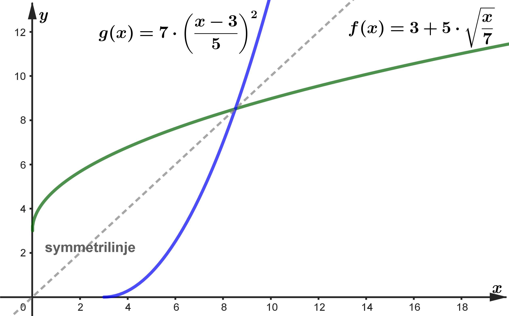
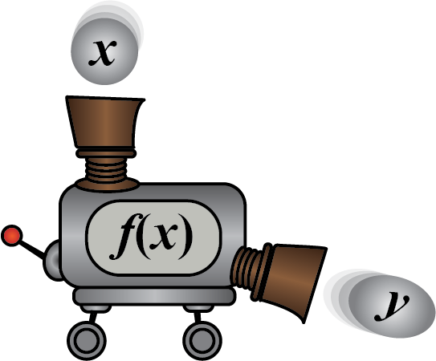
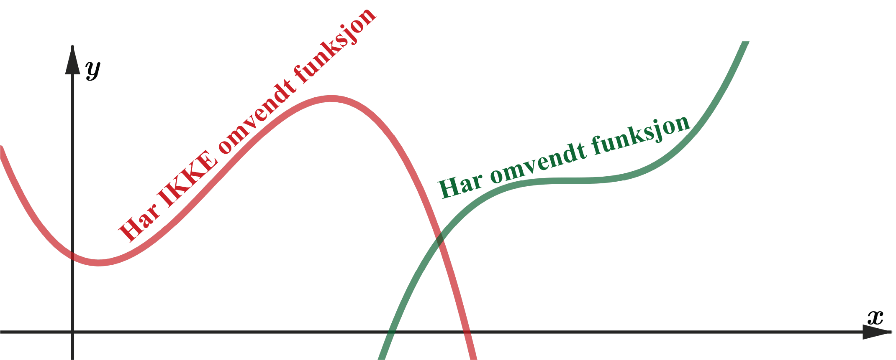
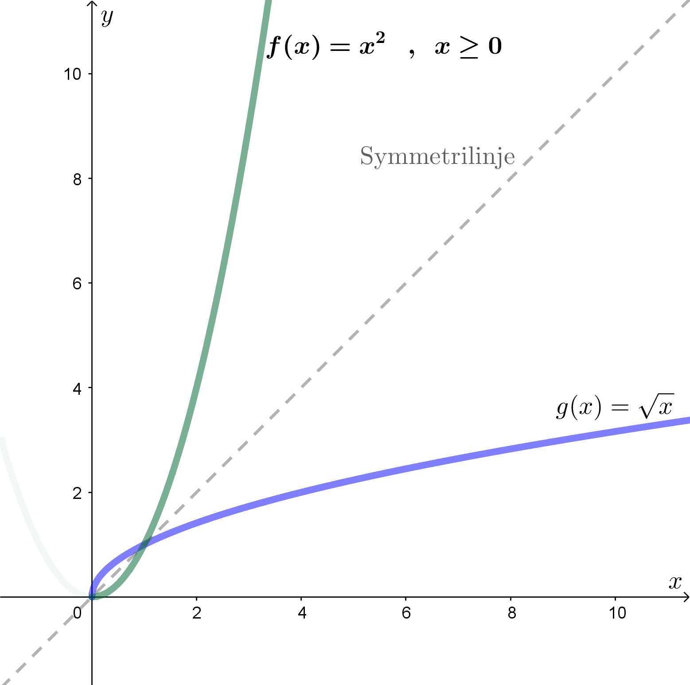
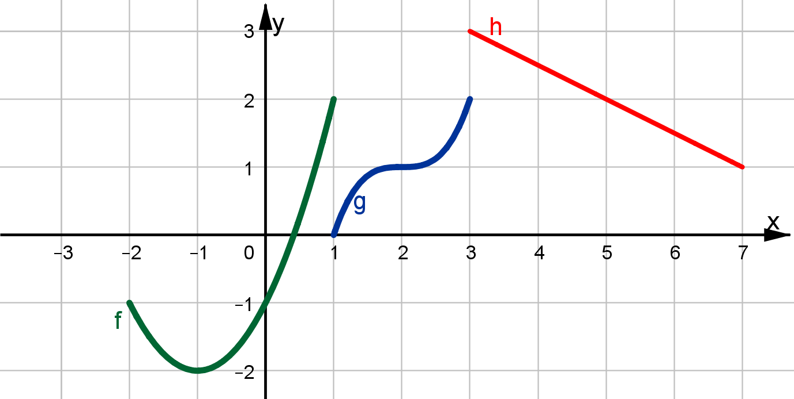
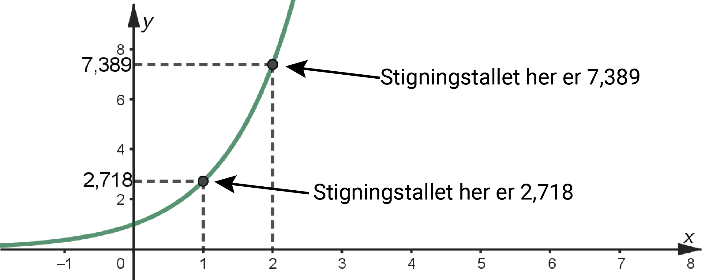
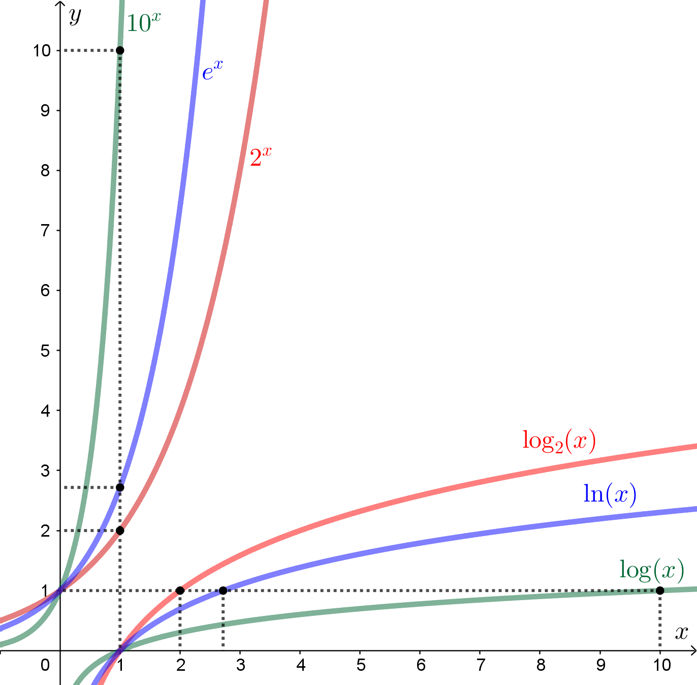

Du skal ha kompetanse om
| \(a^m \cdot a^n = a^{m+n}\) | \(a^0 = 1\) | \((a \cdot b)^n = a^n \cdot b^n\) | \((a^m)^n = a^{m \cdot n}\) |
| \(\dfrac{a^m}{a^n} = a^{m-n}\) | \(\dfrac{1}{a^n} = a^{-n}\) | \(\left(\dfrac{a}{b}\right)^n = \dfrac{a^n}{b^n}\) | \(\sqrt[n]{a} = a^{\frac{1}{n}}\) |

| \(\log 10^x = x\) | \(10^{\log x} = x\) | \(\log(x^n) = n \cdot \log x\) | \(\log(xy) = \log x + \log y\) | \(\log \frac{x}{y} = \log x - \log y\) |
| \(\log_2 2^x = x\) | \(2^{\log_2 x} = x\) | \(\log_2(x^n) = n \cdot \log_2 x\) | \(\log_2(xy) = \log_2 x + \log_2 y\) | \(\log_2 \frac{x}{y} = \log_2 x - \log_2 y\) |
| \(\ln e^x = x\) | \(e^{\ln x} = x\) | \(\ln(x^n) = n \cdot \ln x\) | \(\ln(xy) = \ln x + \ln y\) | \(\ln \frac{x}{y} = \ln x - \ln y\) |
\(a\) opphøyd i \(n\) betyr at \(a\) skal multipliseres med seg selv \(n\) ganger.
\[ a^n = a \cdot a \cdot a \cdot a \cdots a \]Paranteser - potenser - multiplikasjon/divisjon - pluss/minus
Dersom \(f\) og \(g\) er omvendte funksjoner, har de motsatte/omvendte \(x\)- og \(y\)-verdier, slik at
\[ f(x)=y \;\;\;\text{ gir }\;\;\; g(y)=x \]Dersom \(f\) og \(g\) er omvendte funksjoner gjelder også
\[ f(g(x))=x \;\;\;\; \text{ og } \;\;\;\; g(f(x))=x \]Eksempler på omvendte funksjoner:
\[ \begin{aligned} f(x) &= x^2 \text{ og } g(x)=\sqrt{x} \text{ fordi } f(g(x))=(\sqrt{x})^2=x \\ f(x) &= 2x \text{ og } g(x)=\frac{x}{2} \text{ fordi } f(g(x))=2\left(\frac{x}{2}\right)=x \end{aligned} \]En funksjon er en slags maskin som forvandler \(x\)-verdier til \(y\)-verdier.
Hver \(x\)-verdi gir én \(y\)-verdi.

Siden hver \(x\)-verdi bare skal gi én \(y\)-verdi, kan ikke en funksjon som skal ha en omvendt funksjon ha flere \(x\)-verdier for samme \(y\)-verdi:

Omvendte funksjoner er speilsymmetriske rundt linja \(y=x\).

Hvilke av funksjonene har en omvendt funksjon?
Bestem definisjon- og verdimengden til de omvendte funksjonene.

\(f(x)\) har ikke en omvendt funksjon, siden ikke alle \(x\)-verdiene gir en unik \(y\)-verdi.
\(g(x)\) har en omvendt funksjon med \(x\in[0,2]\) og \(V_g=[1,3]\).
\(h(x)\) har en omvendt funksjon med \(x\in[1,3]\) og \(V_h=[3,7]\).
For å finne funksjonsuttrykket til den omvendte funksjonen løser vi likningen for funksjonen med hensyn på \(x\).
Bestem funksjonsuttrykket til den omvendte funksjonen til
\[ f(x)=3+5\cdot \sqrt{\frac{x}{7}} \]Den omvendte funksjonen er dermed
\[ g(x)=7\cdot \left(\frac{y-3}{5}\right)^2 \] MERK: Siden \(x>0\) for \(f(x)\), så er \(x>3\) for \(g(x)\).Eulertallet er en viktig konstant, litt på samme måte som \(\pi=3\text{,}14159265\ldots\)
Den viktigste egenskapen til \(e\) er at stigningstallet til \(f(x)=e^x\) er det samme som funksjonsverdien.

Funksjonen \(f\) er gitt ved \(f(x)=5e^x\).
Bestem \(f'(x)\), \(f'(0)\) og \(f'(1)\).
Derivasjonsregelen gir
\[ f'(x)=5e^x \;\;\;,\;\;\; f'(0)=5e^0=5 \;\;\;,\;\;\; f'(1)=5e^1=5e\approx13\text{,}6 \]\(f(x)=\log x\) er den omvendte funksjonen til \(g(x)=10^x\).
\(\log a\) er det vi må opphøye 10 i for å få \(a\).
\[ 10^{\log a}=a \;\; \text{ og } \;\; \log 10^a=a \]Den Briggske logaritmen kalles også 10'er-logaritmen. Dette er en funksjon som sier hva 10 må opphøyes i for å få tallet vi legger inn i funksjonen.
\[ \begin{aligned} \log 1 &= 0 \;\; \text{ fordi } \;\; 10^0=1 \\ \log 10 &= 1 \;\; \text{ fordi } \;\; 10^1=10 \\ \log 100 &= 2 \;\; \text{ fordi } \;\; 10^2=100 \\ \log 300 &\approx 2\text{,}48 \;\; \text{ fordi } \;\; 10^{2\text{,}48}\approx300 \end{aligned} \]\(f(x)=\log_2 x\) er den omvendte funksjonen til \(g(x)=2^x\).
\(\log_2 a\) er det vi må opphøye 2 i for å få \(a\).
\[ 2^{\log_2 a}=a \;\; \text{ og } \;\; \log_2 2^a=a \]Den binære logaritmen kalles også 2'er-logaritmen. Dette er en funksjon som sier hva 2 må opphøyes i for å få tallet vi legger inn i funksjonen.
\[ \begin{aligned} \log_2 1 &= 0 \;\; \text{ fordi } \;\; 2^0=1 \\ \log_2 2 &= 1 \;\; \text{ fordi } \;\; 2^1=2 \\ \log_2 4 &= 2 \;\; \text{ fordi } \;\; 2^2=4 \\ \log_2 8 &= 3 \;\; \text{ fordi } \;\; 2^3=8 \end{aligned} \]Den naturlige logaritmen bruker Euler-tallet \(e\approx2,71828\) som grunntall.
\(f(x)=\ln x\) er den omvendte funksjonen til \(g(x)=e^x\).
\(\ln a\) er det vi må opphøye \(e\) i for å få \(a\).
\[ e^{\ln a}=a \;\; \text{ og } \;\; \ln e^a=a \]Figuren nedenfor oppsummerer de tre logaritmefunksjonene vi har sett på.

Legg merke til at
\[ \log 10=\ln e=\log_2 2=1 \;\;\; \text{ og } \;\;\; \log 1=\ln 1=\log_2 1=0 \]
Fra definisjonen av logaritmer \(10^{\log x} = x\) og potensregneregler, kan vi utlede tre regneregler for logaritmer.
En av reglene kan utledes slik:
\[
\begin{align}
10^{\log a} \cdot 10^{\log b} &= 10^{\log a + \log b} \text{ (potensregneregel)} \\
10^{\log a} \cdot 10^{\log b} &= a\cdot b \text{ (definisjonen av logaritmer)} \\
10^{\log (a\cdot b)} &= a \cdot b \text{ (definisjonen av logaritmer)}
\end{align}
\]
Fra utregningene over får vi at
\[ 10^{\log(a \cdot b)} = 10^{\log a + \log b} \;\; \Rightarrow \log(a \cdot b) = \log a + \log b \]
På lignende måte kan vi også utlede de to andre reglene nedenfor.
Skriv så enkelt som mulig.
\[ \log 8+\log 6+\log\left(\frac{1}{9}\right) \]METODE 1:
Vi kan bruke reglene til å dele opp, og deretter slå sammen mest mulig;
\[ \begin{aligned} \log 8+\log 6+\log\left(\frac{1}{9}\right) &=\log(2^3)+\log(2\cdot3)+\log\left(\frac{1}{3^2}\right)\\ &=3\cdot\log2+\log2+\log3+\log1-\log3^2\\ &=3\cdot\log2+\log2+\log3+0-2\log3\\ &=4\cdot\log2-\log3 \end{aligned} \]METODE 2:
Vi kan slå sammen uttrykkene ved å bruke regel nr. 2 "feil vei":
\[ \log8+\log6+\log\left(\frac{1}{9}\right)=\log\left(8\cdot6\cdot\frac{1}{9}\right)=\log\left(\frac{16}{3}\right) \]NB: De to løsningene i eksempelet ovenfor er (selvsagt) like, men skrevet på to forskjellige måter:
\[ \log\left(\frac{16}{3}\right)=\log16-\log3=\log2^4-\log3=4\log2-\log3 \] Det er ikke åpenbart hvilket av uttrykkene som er penest. På en prøve vil begge svarene derfor bli regnet som like riktige.Det finnes ikke en bestemt metode vi kan bruke for å løse alle mulige logaritmelikninger, men fremgangsmåtene som er brukt i de tre eksemplene nedenfor dekker det viktigste (altså de fleste logaritmelikninger).
Løs likningen
\[ \log(x-4)+1=3 \]Vi får først \(\log(\ldots)\) alene, og tar deretter "ti opphøyd i" på begge sider for å kvitte oss med \(\log\),
\[ \log(x-4)=2\;\; \Rightarrow \;\; 10^{\log(x-4)}=10^2\;\; \Rightarrow \;\; x-4=100\;\; \Rightarrow \;\; x=104 \]Løs likningen
\[ (\ln x)^2-\ln x^5=-6 \]Dette er en andregradslikning! Hvis vi setter \(\ln x=u\), kan likningen skrives om:
\[ \begin{aligned} (\ln x)^2-5\ln x+6&=0\\ u^2-5u+6&=0\\ (u-2)(u-3)&=0\\ u&=2 \;\;\vee\;\; u=3\\ \ln x&=2 \;\;\vee\;\; \ln x=3\\ e^{\ln x}&=e^2 \;\;\vee\;\; e^{\ln x}=e^3\\ x&=e^2 \;\;\vee\;\; x=e^3 \end{aligned} \]Løs likningen
\[ \ln x^2-\ln x^5=-6 \]Dette er IKKE en andregradslikning!
\[ \begin{aligned} \ln x^2-5\ln x &=-6\\ 2\ln x - 5\ln x &= -6\\ -3\ln x &= -6\\ \ln x &= 2\\ x &= e^2 \end{aligned} \]Det finnes ikke en bestemt metode vi kan bruke for å løse alle mulige eksponentialligninger, men fremgangsmåtene som er brukt i de to eksemplene nedenfor dekker det viktigste.
Løs likningen
\[ 2^x-4=20 \]Først ordner vi likningen slik at vi får \(2^x\) alene. For å "hente ned" \(x\)'en fra eksponenten, tar vi logaritemen på begge sider,
\[ \begin{aligned} 2^x&=24\\ \ln 2^x&=\ln 24\\ x\cdot\ln 2&=\ln 24\\ x&= \frac{\ln 24}{\ln 2} \approx 4\text{,}6 \end{aligned} \]Løsningen kan også skrives som \(x=\log_2 24\) (som betyr "det 2 må opphøyes i for å få 24", som er en løsning som egentlig er enkel å se fra starten av uten å gjøre noen utregning...).
Løs likningen
\[ 9^x-3\cdot3^x=4 \]Dette er en andregradslikning, fordi \(9^x=3^{2x}=3^{x\cdot2}=(3^x)^2\).
Hvis vi setter \(3^x=u\), kan likningen skrives om til
\[ \begin{aligned} u^2-3u-4&=0\\ (u-4)(u+1)&=0\\ u&=4 \;\;\vee\;\; u=-1\\ 3^x&=4 \;\;\vee\;\; 3^x=-1 \end{aligned} \]Det finnes ingen \(x\) som gjør at \(3^x\) blir negativ, så løsningen er
\[ \begin{aligned} 3^x&=4\\ \ln3^x&=\ln4\\ x\cdot\ln3&=\ln4\\ x&=\frac{\ln4}{\ln3} \approx 1\text{,}26 \end{aligned} \]som også kan skrives som \(x=\log_3 4\).